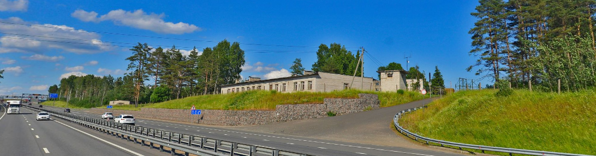

Vulkan Site - Russia
What is Vulkan site?
The Vulkan site also known as the 60th Communications Node of the Russian Ministry of Defense located at Kerro/Kerro Massiv in northern Russia on North of Saint-Petersburg. This site, known as Kerro site but with his real name "Vulkan", is known for transmitting the famous station UVB-76, also called The Buzzer.
What we know about it?
As mentioned before, this site is known for transmitting the famous station UVB-76 or The Buzzer. We also know about the purpose of this site: it is mainly for radio communications and military command troop. There is also another site near it named the "Kerro" site, which is a command military base. The purpose of the Kerro site is unknown.
Coordinates
The site is located at Kerro Massiv at these coordinates: 60.310781, 30.277516
Footages of the site
More information
Here you will find the rest of second time informations.
Materials:
- CIS-12, AT-3004D/AT-3104D, MSFIRE, Fire, etc... About | Footage
- CIS-3 (New) Footage
- CIS-60, Not used much recently. About | Footage
- CIS-45, rarely used. About | Footage
- Buzzer
- Hum (probably natural ground loop noise covered by AGC)
- Jammer (they sometimes use sinewaves as a jammer) Footage